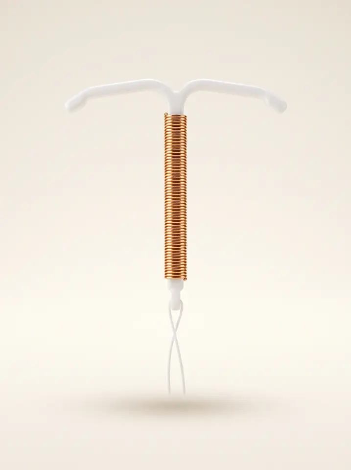

Gold T® Mini — hormonsuz bakırlı rahim içi araç · 375 mm² aktif bakır · 0,1 mm altın çekirdek · en çok 5 yıl
Sistemik hormon içermez; adet siklusu ve doğal hormon dengesi korunur. Koruyucu etki yerleştirme anında başlar. Mini boy, 24 mm genişliğiyle küçük uterus kavitesi için ölçeklendirilmiş seçenektir.
Hormonsuz bakırlı RİA — bakır telin merkezinde 0,1 mm altın çekirdek, T/Y formunda esnek çerçeve.
Gold T® Mini, gebelikten korunmaya yönelik hormonsuz bir rahim içi araçtır. Baryum sülfat katkılı polietilen çerçevenin dikey gövdesi, aktif yüzeyi 375 mm² olan yüksek saflıkta (%99,99) bakır telle sarılmıştır. Bu telin merkezinde 0,1 mm çapında altın bir çekirdek bulunur.
Altın, kontraseptif etkiye katkı vermez; üreticinin bildirdiği işlevi, bakır telin korozyona bağlı parçalanmaya karşı direncini artırmaktır. Kontraseptif aktif yüzey yalnızca bakırdır.
Kadın doğum uzmanı tarafından uterus kavitesine yerleştirilir ve koruyucu etkisini hemen gösterir; çıkarıldığında doğurganlık gecikmeden geri döner.
Sperm: salınan bakır iyonları spermin hareketliliğini ve yön bulmasını bozar; fertilizasyon büyük ölçüde gerçekleşmez — primer etki fertilizasyon öncesidir.
Endometrium: bakır iyonlarının yarattığı lokal steril inflamatuvar ortam, döllenmiş bir yumurtanın implantasyonunu da engeller.
Etki mekanizması bakır iyonlarına bağlıdır ve hormonal değildir; ovulasyon baskılanmaz, adet siklusu devam eder.

Tedarik, ruhsat ve hasta dosyası için tek sayfalık referans.
| 01040100 · Normal | 31 × 33 mm — güncel katalogda |
| 01040000 · Maxi | 36,5 × 38 mm — eski föylerde; güncel 2026 kataloğunda yer almıyor |
Her üç boyda da aktif bakır yüzey 375 mm² olarak bildirilmiştir; boylar kaviteye uyumu değiştirir, bakır yükünü değil.
Eurogine'in Rev. 11/2020 teknik föyünde açıklama metninde 375 mm², teknik tablo satırında ise 380 mm² yazmaktadır.
Üreticinin 2024–2026 tarihli güncel katalog ve hasta bilgilendirme belgeleri tutarlı biçimde 375 mm² bildirir. Bu broşürde ve hekim iletişiminde 375 mm² esas alınmalıdır.
Steril tek kullanımlık blister ambalaj, önceden yüklenmemiş cihaz + inserter, çok dilli hasta bilgilendirme formu ve hasta kartı (yerleştirme ve kontrol tarihi).
MDR Madde 18 kapsamında Class III implante edilebilir cihazlarda hasta kartı (implant card) zorunludur; lot numarası hasta dosyasına kaydedilmelidir.
MINI 24 × 30,5 mm · NORMAL 31 × 33 mm — her iki boyda da 375 mm² bakır ve 0,1 mm altın çekirdek.
Üretici, Gold T için boy başına sayısal kavite uzunluğu eşiği yayımlamamaktadır. Eşik değer için ürünle gelen güncel IFU esas alınmalı; sınıf pratiğinde TCu380A tipi cihazlarda 6–9 cm sonda önerilir; 6 cm altındaki kavitede ekspulsiyon, kanama ve perforasyon sıklığı artar.
Üretici Gold T için ürüne özel bir Pearl indeksi yayımlamaz. Sınıf referansı olarak EURAS-IUD çalışmasında, 58.324 kişilik doğrulanmış RİA kohortu içindeki bakırlı RİA kullanıcılarında Pearl indeksi 0,52 (%95 GA 0,42–0,64) bildirilmiştir — hormonal uzun etkili yöntemlerle aynı güvenilirlik aralığı.
Kullanım süresi en çok 5 yıl; hekim tarafından her zaman çıkarılabilir, çıkarım sonrası doğurganlık gecikmez.
Not: Gold T'nin etiket süresi 5 yıldır; TCu380A'nın 10 yıllık etiketi bu ürün için geçerli değildir.
Heinemann K ve ark. Contraception. 2015;91(4):280–283. DOI: 10.1016/j.contraception.2015.01.011
Kontraseptif yüzey bakırdır. Altının tek görevi, o bakır telin beş yıl boyunca bütün kalmasıdır.
Bakırlı RİA'nın kontraseptif etkisi, bakırın uterus sıvısında çözünüp iyon salmasıyla ortaya çıkar. Yani etki mekanizmasının kendisi bir korozyon sürecidir. Tel beş yıl boyunca yüzeyinden aşınır, incelir ve lokal olarak kırılganlaşır.
Bakır telin ikincil fragmentasyonu — bütün görünen bir cihaz çıkarıldıktan sonra kavitede bakır parçası kalması — literatürde bildirilmiş bir komplikasyondur.
Dubovis M, Rizk N. Case Rep Womens Health. 2020;27:e00208. DOI: 10.1016/j.crwh.2020.e00208
Zaman şeması temsilîdir; bakır telin dış çapı 0,4 mm, altın çekirdek 0,1 mm'dir.
Bu yaklaşım Gold T'ye özgü değildir. Yaygın kullanılan Nova-T 380'de 0,4 mm bakır telin içinde 0,1 mm gümüş çekirdek bulunur; üretici bu çekirdeğin işlevini telin korozyona bağlı fragmentasyonunu önlemek ve cihazın ömrünü uzatmak olarak tanımlar.
Gold T aynı mimariyi kullanır — 0,4 mm bakır tel, 0,1 mm çekirdek — gümüş yerine altınla.
3,8 mm kanül, ayarlanabilir flanş ve gövde üzerinde 5–10 cm histerometri skalası.
Eurogine'in eski belgelerinde sistemin "başarılı histerometri sonrası perforasyonu tümüyle imkânsız kıldığı" ifadesi geçer. Üreticinin güncel belgelerinde bu ifade "riski azaltır/en aza indirir" biçiminde ölçülüdür. Hekim iletişiminde güncel, ölçülü ifade kullanılmalıdır.
Pelvik enfeksiyon riski esas olarak yerleştirmeyi izleyen ilk 20 günle sınırlıdır ve %1'in altındadır; rutin antibiyotik profilaksisi önerilmez. Ağır dismenore öyküsünde ağrı planı yerleştirme öncesinde konuşulmalıdır. Lot numarası hasta dosyasına ve hasta kartına kaydedilir.
Aynı etkinlik sınıfı, tamamen farklı uygunluk profili — LNG-RİS, deri altı implant ve kombine hapla karşılaştırma.
LNG-RİS kullanımı meme kanseri ile HR 1,4 (%95 GA 1,2–1,5) ilişkili bulundu (78.595 eşleştirilmiş kullanıcı). Bakırlı RİA bu tartışmanın dışındadır.
Mørch LS ve ark. JAMA. 2024;332(18):1578–1580.
20 randomize çalışmanın meta-analizinde amenore nedeniyle yöntemi bırakma, LNG-RİS'te bakırlı RİA'ya göre RR 21,05 (8,83–50,00) kat yüksekti.
Liu P ve ark. eClinicalMedicine. 2024;78:102926.
Üç yöntemi doğrudan karşılaştıran randomize çalışmada 1 yıllık devam: implant %82,6, LNG-RİS %81,0, TCu380A %73,2. Bırakma nedeni implantta kilo artışı, bakırlı RİA'da ekspulsiyondu.
Modesto W ve ark. Hum Reprod. 2014;29(7):1393–1399.
US MEC kategorileri: 1 kısıtlama yok · 2 yarar riske ağır basar · 3 risk yarara ağır basar · 4 kabul edilemez risk. Başarısızlık oranları sınıf düzeyinde tipik kullanım değerleridir.
Şekil, genişlik ve bakır yükü — üç parametrenin üçünde de yayımlanmış karşılaştırmalı veri var.
35 randomize çalışma ve yaklaşık 48.000 kadını kapsayan Cochrane derlemesinde TCu380A/TCu380S, MLCu375, MLCu250, TCu220 ve TCu200'den daha etkili bulundu — etkinlik yüksek bakır yüküyle birlikte artıyor. Gold T'nin 375 mm²'si bu yüksek yüklü sınıftadır.
Aynı derlemenin dürüst notu: hiçbir çerçeveli bakırlı cihazın nullipar kadınlar için diğerlerinden üstün olduğuna dair kanıt bulunamamıştır; bu grupta randomize veri azdır.
Kulier R ve ark. Cochrane Database Syst Rev. 2007;(4):CD005347. DOI: 10.1002/14651858.CD005347.pub3
Okuma: küresel geometrinin ekspulsiyon üstünlüğü kanıtlanmamıştır; en geniş bağımsız veri seti aksi yöndedir.
Wiebe E, Trussell J. Contraception. 2015;93(4):364–366 · Baram I 2019 · Yaron M 2019 · Boehnke T 2024
30 yaş altı 5.762 bakırlı RİA kullanıcısının analizinde 18–<30 mm genişlik ve esnek kollar daha yüksek devamla ilişkiliydi — Gold T Mini 24 mm ve esnek kolludur.
Aynı analizde <300 mm² bakır ve at nalı çerçeve de olumlu bulunmuştur; Gold T bu iki özelliğe uymaz. Dört özellikten ikisi uyumludur — ve düşük bakır yükü etkinliği düşürebileceğinden tek başına üstünlük sayılmaz.
Akintomide H ve ark. Eur J Contracept Reprod Health Care. 2021;26(3):175–183.
Ürünün olumsuz verisi de bu broşürde yer alır: bir klinik yayın ve bir saha güvenlik bildirimi.
Tek merkez, retrospektif; randomizasyon yok · yalnızca 2 cihaz modeli · kohort en az bir vajinal doğum yapmış kadınlarla sınırlı, nullipar hasta dışlandı — bulgular MINI'nin hedef grubuna doğrudan genellenemez · bir bölümü 5 yıllık etiket süresinin ötesinde kalmış cihazlar · mekanik dayanım testi yapılmadı, kırılma mekanizması hipotez düzeyinde.
Med Sci Monit. 2025;31:e950460. PMID 41275328. DOI: 10.12659/MSM.950460
Eurogine, Ancora, Novaplus ve Gold T ailelerini kapsayan bir bildirim yayımladı. Çerçeveyi oluşturan polimer–baryum sülfat karışımının homojen dağılmaması nedeniyle kolların kırılması mümkün oluyordu; kök neden hammadde tedarikçisinin üretim kusuruydu.
Bugün: bildirim tanımlı lotlarla sınırlıdır; piyasadaki Gold T Mini geri çağrılmış bir ürün değildir. Ancak o dönemde takılmış cihazlar hâlâ hastalarda olabilir.
IVF arası dönem, acil kontrasepsiyon, emzirme ve perimenopoz.
Düzeltilmiş risk oranları: taze aRR 1,01 (%95 GA 0,91–1,11); donmuş aRR 0,97 (0,87–1,07). Önceki bakırlı RİA kullanımı IVF sonuçlarını etkilememiştir. IVF planlanan hastada ara dönem kontrasepsiyonu; stimülasyon öncesi çıkarılır.
Huang W ve ark. Front Cell Dev Biol. 2026;14:1790194. DOI: 10.3389/fcell.2026.1790194
Randomize çalışmada korunmasız ilişkiden sonraki 120 saat içinde bakırlı RİA takılan 321 hastanın hiçbirinde gebelik görülmedi (%0; %95 GA 0–1,1) ve aynı uygulamayla 5 yıla kadar kalıcı koruma sağlandı.
IFU'dan doğrulayın Acil kontrasepsiyon, bakırlı RİA sınıfına ait bir uygulamadır; Gold T'nin onaylı endikasyonları için ürün IFU'su esas alınmalıdır.
Tasarım, üretim ve kalite kontrol tek tesiste; sterilizasyon sertifikalı dış kuruluşta.
| Ünvan | EUROGINE, S.L. · NIF B59608919 · kuruluş 1991 |
| Adres | C. Raurell 21-29, Nave 3 · 08860 Castelldefels, Barcelona |
| Tesis | Valide ve sertifikalı ISO Sınıf 7 temiz oda, üretim, kalite kontrol ve Ar-Ge laboratuvarı, depolama |
| Sterilizasyon | Valide etilen oksit prosesi, sertifikalı dış kuruluş; lotlar akredite dış laboratuvarda mikrobiyolojik kontrolden geçer |
| İhracat | 50'den fazla ülke |
| İletişim | eurogine@eurogine.com · pedidos@ · worldwide@ · +34 93 630 43 45 |
| Kalite sistemi | UNE-EN ISO 13485:2018 / EN ISO 13485:2016 / ISO 13485:2016 |
| Sertifika no | 2012 01 0006 EN |
| Kapsam | Tasarım, geliştirme ve aktif olmayan implantların üretimi |
| Geçerlilik | 26 Kasım 2026 — yenilenme durumu tedarik öncesi teyit edilmeli |
| Cihaz mevzuatı | MDR (AB) 2017/745 · Class III · CE 0318 |
| Ulusal izin | AEMPS ön sağlık lisansı (İspanya) |
Class III, MDR'de en yüksek risk sınıfıdır: tasarım dosyası onaylı kuruluşça incelenir ve piyasaya arz sonrası izlem (PMS/PMCF) zorunludur.
Eurogine uluslararası belgelerinde Türkiye'yi satış yapılan ülkeler arasında sayar ve Medaks Sağlık web sitesinde Eurogine rahim içi araçlarını ürün grubu olarak göstermeye devam eder.
Ancak bu sayfa 2017 tarihlidir ve Gold T için 10 yıl yazmaktadır; üreticinin güncel belgeleri en çok 5 yıl demektedir. Güncel distribütörlük yalnız bu sayfaya dayanarak kabul edilmemelidir.
Doğrulama: TİTCK ÜTS kaydı · üreticiden yazılı teyit · Türkçe kılavuz.
Broşürün dürüstlük notu: Bu dosyada üretici beyanları, sınıf düzeyindeki klinik kanıt ve ürünün olumsuz verisi ayrı ayrı işaretlenmiştir. Gold T® Mini'ye özgü randomize klinik çalışma bulunmamaktadır; karşılaştırma sayfalarındaki veriler sınıf düzeyindedir. Spontan kırılma verisi ve saha güvenlik bildirimi (s. 09) değerlendirmeye dâhil edilmelidir.
1. Semiz A, Özbay K. Med Sci Monit. 2025;31:e950460.
2. Heinemann K ve ark. Contraception. 2015;91(4):280–283.
3. Skovlund CW ve ark. JAMA Psychiatry. 2016;73(11):1154–1162.
4. Mørch LS ve ark. JAMA. 2024;332(18):1578–1580.
5. Liu P ve ark. eClinicalMedicine. 2024;78:102926.
6. Hubacher D ve ark. eClinicalMedicine. 2022;51:101554.
7. Akintomide H ve ark. BMJ Open. 2022;12(10):e060606.
8. Akintomide H ve ark. Eur J Contracept Reprod Health Care. 2021;26(3):175–183.
9. Boehnke T ve ark. Contraception. 2024;140:110444.
10. Kulier R ve ark. Cochrane Database Syst Rev. 2007;(4):CD005347.
11. Wiebe E, Trussell J. Contraception. 2015;93(4):364–366.
12. Baram I ve ark. 2019;25(1):49–53 · Yaron M ve ark. 2019;24(4):288–293 (Eur J Contracept Reprod Health Care).
13. Modesto W ve ark. Hum Reprod. 2014;29(7):1393–1399.
14. Jensen JT ve ark. Am J Obstet Gynecol. 2022;227(6):873.e1–12.
15. Dubovis M, Rizk N. Case Rep Womens Health. 2020;27:e00208.
16. Batár I ve ark. Contraception. 2002;66(5):309–314.
17. Huang W ve ark. Front Cell Dev Biol. 2026;14:1790194.
18. Turok DK ve ark. N Engl J Med. 2021;384(4):335–344 · Gaio GS ve ark. Eur J Obstet Gynecol Reprod Biol. 2024;305:153–158.
19. Cortessis VK ve ark. Obstet Gynecol. 2017;130(6):1226–1236.
20. CDC U.S. MEC 2024 · ACOG Practice Bulletin No. 186 (2017) ve Committee Statement No. 5 (2023) · AEMPS NI-PS 24/2019; BfArM 01783/18; FSRH CEU bildirisi (2021) · Eurogine 2026 ürün kataloğu, hasta bilgilendirme Rev. 09/2024, teknik föy Rev. 11/2020 · Bayer Nova-T 380 ürün bilgisi.
Hekime yönelik bilimsel bilgilendirme amaçlıdır; hasta tanıtım materyali değildir. Ürün-spesifik endikasyon, kontrendikasyon ve uygulama bilgisi için yürürlükteki kullanım talimatı (IFU) esastır. Görseller temsilîdir. · Eylül 2026